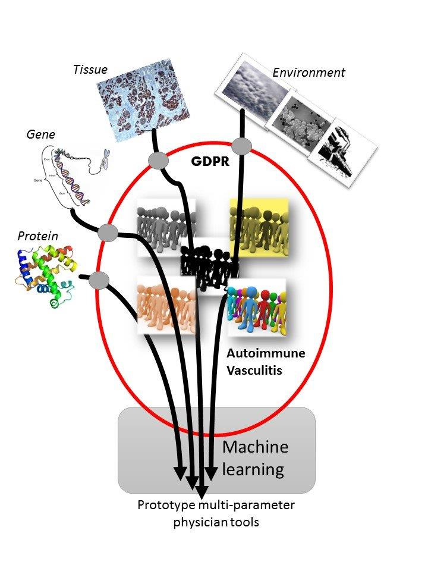

About us
The project
The overall goal of HELICAL is to establish a European training network to prepare the next generation of Health Informatics Researchers. Advances in information science and artificial intelligence provide unprecedented opportunities for using these datasets to elucidate the complex biology of these disorders, how it is influenced by environmental triggers, and to personalise their management. Currently, exploitation of these opportunities is severely limited by the shortage of researchers with the required informatics skills, knowledge of requisite data protection and stewardship principles and understanding of the clinical context.

HELICAL addresses this unmet need by developing a trans-sectoral and interdisciplinary training programme that builds on the expertise and existing collaborations of its partners. It will use autoimmune vasculitis as a paradigm because it is scalable, the analysis of different forms will allow the influence of age and gender to be assessed, and comprehensive biological and clinical datasets are already available.
The HELICAL training programme focuses on three complementary areas:
- application of informatics to such datasets to gain new biological insights.
- translation of biological into practical clinical outputs.
- identification of the novel ethical constraints imposed on such studies and development of strategies to manage them.
The programme is delivered through a multidisciplinary and trans-sectoral partnership of world-leading researchers from Academia and Industry with expertise in biomedical research, epidemiology, statistics, machine learning, health data governance and ethics.
The ESRs
The Consortium
Made with , and Quarto
View the source at GitHub
:::